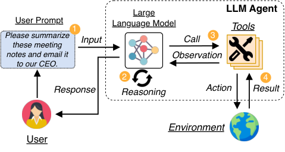

An AI agent harness formalizes consensus protocols in Lean and proves linearizability, using about 135K lines of Lean that include proofs for a new protocol and counterexamples for existing ones.
Abstract
Consensus is a fundamental problem in distributed computing and at the core of state machine replication (SMR). Despite decades of active human research, discovering practical low-latency solutions to the problem is still open, as it requires combining protocol knowledge, correctness reasoning, implementation, and experimental evaluation. We report on how AI helped us discover A-greement, a new consensus protocol for geo-replicated state machines that significantly outperforms state-of-the-art solutions. Averaged across six deployments with 5 or 9 replicas, A-greement reduces the mean latency of a geo-distributed key-value store over the fastest baseline by 12.2% and 33.3% on write-heavy and read-heavy workloads, respectively, and matches the fastest baseline on read-only workloads. A-greement combines lease-authorized local reads, direct client learning for leader-ordered writes, and a fast fixed-quorum per-key write path, selected according to network topology and workload. At the heart of our discovery lies AI-greement, an agent harness for the "autonomous" discovery, implementation, experimentation, and verification of candidate protocols. AI-greement integrates (1) a concept-oriented protocol knowledge base, (2) a modular implementation skeleton, and (3) a Lean-based verification framework with reusable safety definitions, reference specifications, and proofs. AI-greement is of independent interest: its Lean formalization uncovers several previously unreported vulnerabilities in existing consensus protocols, and it provides guidelines on how domain-specific harnesses can turn general-purpose coding agents into effective tools for (distributed) computing research. Yet we argue that human consensus experts remain essential before, during, and after the search: agents reshape the researcher's role rather than end consensus research.
Problem
Designing consensus protocols for geo-replicated state machine replication that are both correct and low-latency requires combining protocol knowledge, correctness reasoning, implementation, and evaluation. The paper asks whether AI agents can help discover such protocols.
Approach
AI-greement is an agent harness built around a general-purpose coding agent. It combines a concept-oriented protocol knowledge base, a modular Go implementation skeleton, and a Lean verification framework. The Lean framework provides a shared execution model, a linearizability definition, and reference specifications and proofs for Multi-Paxos, FastPaxos, SwiftPaxos, EPaxos*, and Bodega. The agent iterates as researcher, developer, and verifier: it designs candidates, benchmarks them, and formalizes and proves their safety in Lean, with humans reviewing the results to remove benchmark-hacking.

Figure 1: The workflow of an LLM agent.
Results
The discovered protocol, A-greement, is proved linearizable in about 98K lines of Lean. It reduces mean latency over the fastest baseline by 12.2% on write-heavy and 33.3% on read-heavy workloads, and matches it on read-only workloads. The Lean formalization also uncovered four previously unreported vulnerabilities in EPaxos Revisited and Bodega.